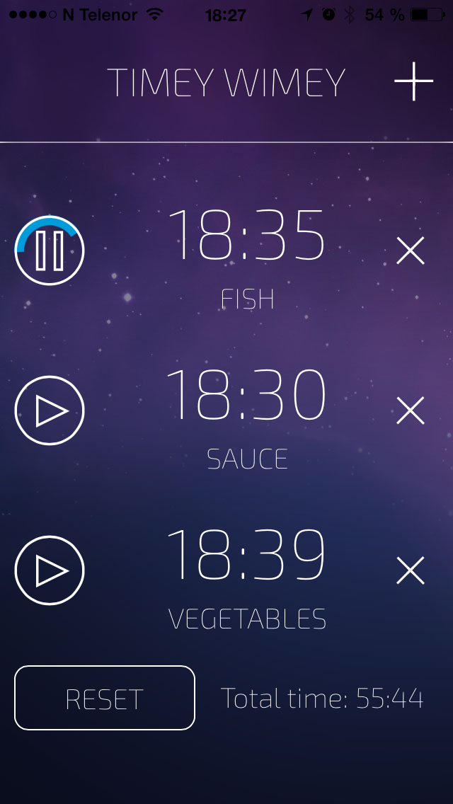

Timey Wimey
A multi time counter app

Timey Wimey is a simple time counter build with angular, yeoman, phonegap and jquery.
You can look at the source at github.com/retrojorgen and contact me with this form.
Timey Wimey is a simple time counter build with angular, yeoman, phonegap and jquery.
You can look at the source at github.com/retrojorgen and contact me with this form.